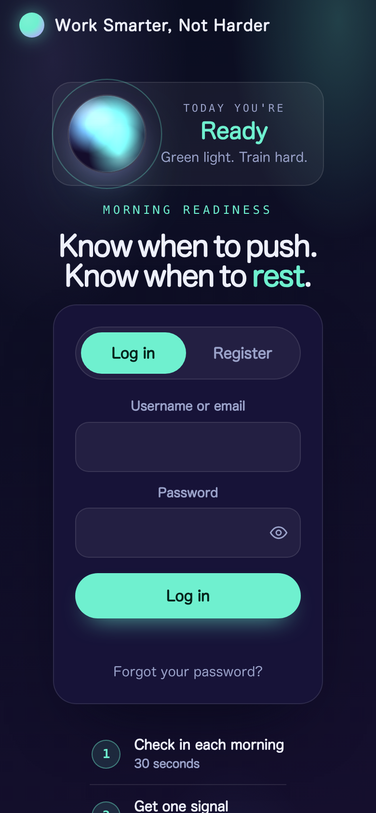
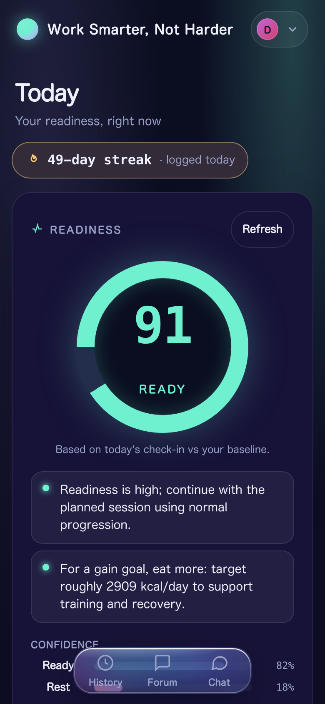
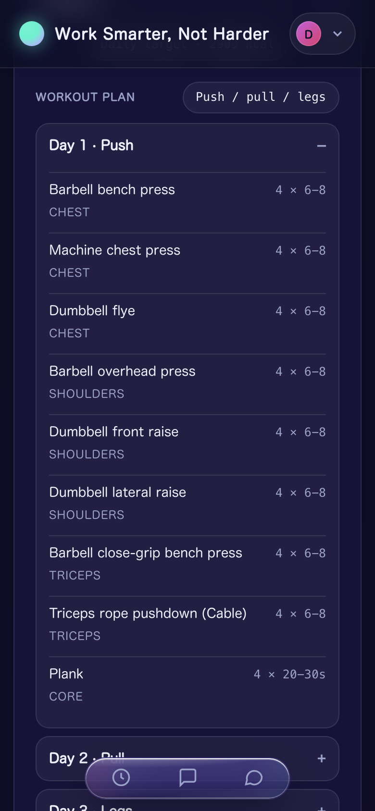
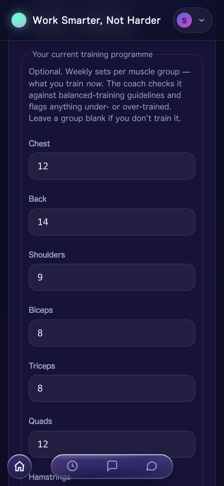
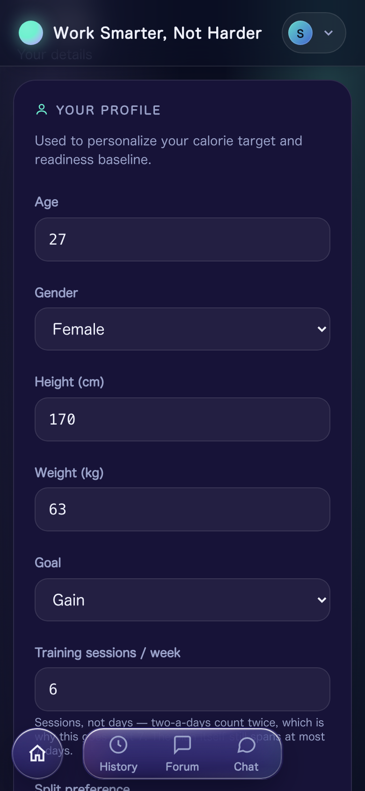
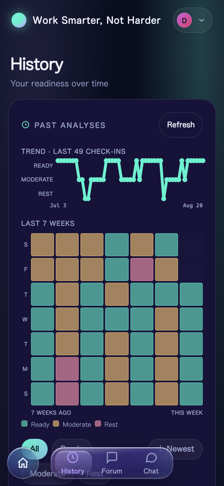
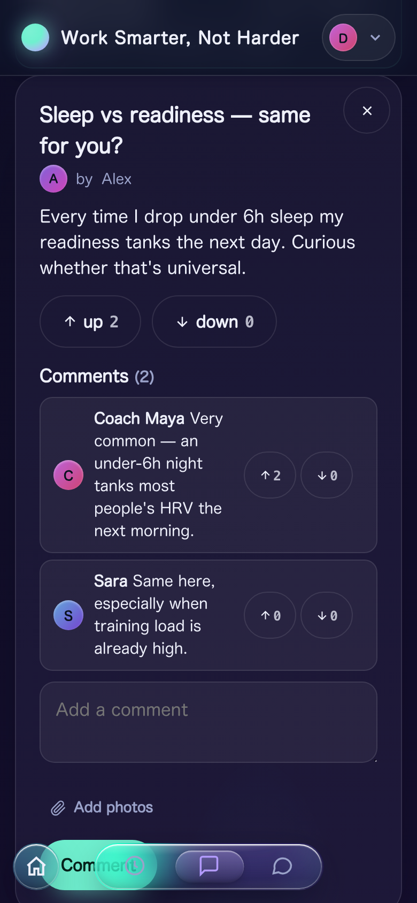
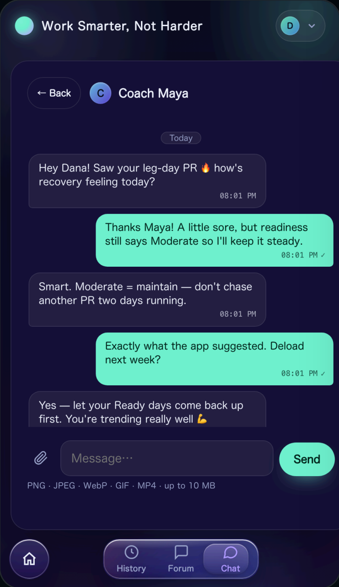

Sign-up verifies your email before the account exists, and signing in takes a password and a one-time code. Export everything you hold, or delete it all, whenever you like.

Log five morning metrics and a locally-trained Random Forest calls your state — Ready, Moderate or Rest — with its confidence and a calorie target.

The split resolves from your week, then every day is filled with real exercises, sets and reps from a 99-exercise catalog — matched to the equipment you actually have.

Enter your weekly sets per muscle group and the coach measures them against balanced-training guidelines, flagging anything under- or over-trained.

Age, height, weight, goal, how often you train and what equipment you own — every one of them changes the calorie target and the plan you get.

Every check-in is kept and plotted — a readiness trend and a seven-week heatmap, so a bad week is visible instead of remembered.

Posts and comments carry photos and video, both take votes, and you can post anonymously when you would rather not sign your name to it.

Direct messages with media, delivered in real time — no refresh — and a notification when someone writes to you or votes on your post.